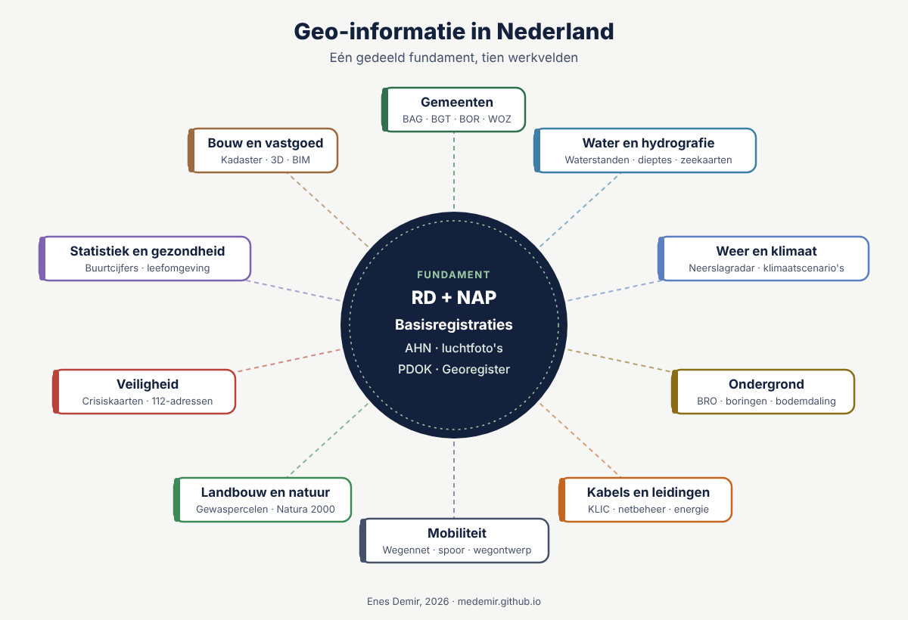

Geo-informatie in Nederland: een overzicht
Bijna alles wat de overheid en bedrijven in Nederland doen, gebeurt ergens. Daarom zit geo-informatie overal: in de vuilniswagenroute van je gemeente, in de waterstand op de rivier, in de buienradar op je telefoon en in de tekening die een graafmachinist meekrijgt. In dit artikel loop ik de belangrijkste werkvelden langs. Ik begin met het fundament dat ze allemaal delen.

Het fundament
Nederland heeft een van de best geregelde geo-fundamenten ter wereld. Vier bouwstenen komen in elk werkveld terug.
- Coördinaten en hoogte. Het Rijksdriehoeksstelsel (RD) geeft een plek in meters, het Normaal Amsterdams Peil (NAP) geeft de hoogte. Wie met GNSS meet, rekent met RDNAPTRANS van wereldcoördinaten naar RD en NAP.
- Basisregistraties. Wettelijk vastgelegde bronnen die iedere overheid moet gebruiken. Voor geo zijn dat vooral de BRK (eigendom en percelen), de BAG (adressen en gebouwen), de BGT (een gedetailleerde kaart op schaal 1:500 tot 1:5000), de BRT (topografie), de BRO (de ondergrond) en de WOZ (waarde van onroerende zaken).
- Hoogte en beeld. Het AHN is een landsdekkende hoogtekaart, gemeten met laser vanuit vliegtuigen. Daarnaast wordt Nederland elk jaar opnieuw gefotografeerd vanuit de lucht. De luchtfoto's van 2026 hebben een resolutie van 5 tot 8 centimeter en zijn open data.
- Delen en vinden. PDOK levert de landelijke datasets als kaartdiensten (WMS, WFS en API's). In het Nationaal Georegister vind je wat er bestaat. Geonovum beheert de standaarden, zoals NEN 3610 en IMGeo.
De volgende grote stap is de Samenhangende Objectenregistratie (SOR). Daarin moeten de BGT, de BAG en de WOZ-gegevens samenkomen. Zo hoeft een gebouw nog maar één keer ingewonnen en bijgehouden te worden. De SOR is nog in ontwikkeling.
1. Gemeenten
Gemeenten zijn de grootste bijhouders van geo-informatie. Zij zijn bronhouder van de BAG en van een groot deel van de BGT.
- Basisregistraties bijhouden: nieuwe gebouwen, adressen en wegen intekenen en controleren, vaak op basis van landmeetkundige metingen.
- Beheer openbare ruimte (BOR): elk object in de openbare ruimte krijgt een paspoort, van lantaarnpaal tot boom en bestrating. Daarmee plannen gemeenten onderhoud en budget.
- Omgevingswet: regels over wat waar mag, staan in het omgevingsplan en zijn met een kaart te raadplegen in het Omgevingsloket.
- Ruimtelijke ontwikkeling: uitgifte- en matenplannen, naamgeving van straten, huisnummering en uitzetten in het veld.
- WOZ en belastingen: de waardering van woningen gebruikt gebouwgegevens uit de BAG.
2. Water en hydrografie
In een land waarvan een groot deel onder zeeniveau ligt, is waterbeheer misschien wel het belangrijkste geo-werkveld.
- Rijkswaterstaat meet waterstanden, afvoeren en de bodem van rivieren en de kust. Die gegevens sturen de verwachtingen en de vaarwegen.
- Waterschappen beheren dijken, peilgebieden en sloten. Hun legger legt vast waar welk water en welke kering ligt, en wie die moet onderhouden.
- De Dienst der Hydrografie van de Koninklijke Marine doet dieptemetingen op zee, maakt zeekaarten en legt de Nederlandse zeegrenzen vast. Zo kan de scheepvaart veilig varen.
- Overstromingsrisico's worden gerekend met hoogtedata uit het AHN, gecombineerd met modellen van water en dijken.
3. Weer en klimaat
Het KNMI meet het weer met stations, radar en satellieten. Dat zijn allemaal gegevens met een plek en een tijd. De neerslagradar en de KNMI'23-klimaatscenario's zijn als open data te downloaden via het KNMI Data Platform. Gemeenten en waterschappen combineren die met hun eigen kaarten: waar valt de meeste regen, waar wordt het het heetst, welke straat loopt als eerste onder?
4. Ondergrond
Onder Nederland zit net zoveel informatie als erboven. In de BRO staan boringen, sonderingen, grondwaterstanden en bodemkaarten. Die zijn onder andere via DINOloket van TNO te raadplegen. Geo-informatie helpt bij funderingsonderzoek, grondwaterbeheer en het volgen van bodemdaling. Bodemdaling wordt steeds vaker met radarsatellieten (InSAR) op millimeters nauwkeurig gemeten. Ook archeologie en erfgoed hebben eigen kaarten van waar je beter niet zomaar kunt graven.
5. Kabels en leidingen
Wie in Nederland gaat graven, moet eerst een KLIC-melding doen bij het Kadaster. De netbeheerders laten dan zien welke kabels en leidingen er liggen. Bij netbeheerders, waterbedrijven en telecombedrijven is GIS het hart van het assetbeheer: waar ligt welke leiding, hoe oud is die en wanneer moet hij worden vervangen? Door de energietransitie groeit dit werkveld snel: denk aan het verzwaren van het stroomnet, warmtenetten en het vinden van plekken voor zonneparken en laadpalen.
6. Mobiliteit en infrastructuur
Het Nationaal Wegenbestand (NWB) bevat alle wegen met een straatnaam of nummer. Op het spoor beheert ProRail zijn eigen geodata. Bij het ontwerp van wegen, fietspaden en bruggen werken tekenaars in Civil 3D of OpenRoads, steeds vaker samen met BIM-modellen. Na de aanleg komt alles terug in de BGT en in de beheersystemen. Verkeersdata, zoals intensiteiten en files, wordt live op de kaart gezet.
7. Landbouw en natuur
Boeren geven hun percelen en gewassen jaarlijks op. Die kaart (BRP-gewaspercelen) is de basis voor subsidies en controles. Trekkers rijden met GNSS-sturing op enkele centimeters nauwkeurig en strooien precies waar het nodig is. In de natuur gaat het om begrenzingen van Natura 2000-gebieden, waarnemingen van planten en dieren, en de berekening van stikstofneerslag per gebied.
8. Veiligheid en crisis
Bij een brand, een overstroming of een groot ongeval moet iedereen hetzelfde beeld hebben. Veiligheidsregio's werken met gedeelde crisiskaarten. Meldkamers gebruiken de BAG om een 112-melding aan het juiste adres te koppelen. Defensie heeft eigen geodiensten voor oefeningen en missies, en politie en hulpdiensten gebruiken kaarten voor de inzet van eenheden.
9. Statistiek en gezondheid
Het CBS publiceert cijfers per wijk, buurt en vierkant van 100 bij 100 meter: inwoners, leeftijd, inkomen en woningen. Het RIVM zet gezondheid en leefomgeving op de kaart, zoals luchtkwaliteit, geluid en groen. Beleidsmakers combineren die lagen om te zien waar de leefomgeving extra aandacht nodig heeft.
10. Bouw en vastgoed
Het Kadaster legt vast wie wat bezit. Notarissen, makelaars, banken en verzekeraars gebruiken die gegevens dagelijks. Projectontwikkelaars en architecten werken met 3D-modellen van gebouwen, zoals de 3D BAG, voor zonnestudies, schaduw en zichtlijnen. Steeds vaker groeien GIS en BIM naar elkaar toe: het ontwerpmodel van een gebouw komt na oplevering terug in de kaart.
In één oogopslag
| Werkveld | Belangrijkste partijen | Typische data |
|---|---|---|
| Gemeenten | Gemeenten, VNG | BAG, BGT, BOR, WOZ, omgevingsplan |
| Water | Rijkswaterstaat, waterschappen, Dienst der Hydrografie | Waterstanden, dieptes, legger, zeekaarten |
| Weer en klimaat | KNMI | Neerslagradar, stations, klimaatscenario's |
| Ondergrond | TNO, BRO-bronhouders | Boringen, grondwater, bodemdaling |
| Kabels en leidingen | Kadaster (KLIC), netbeheerders, waterbedrijven | Ligging en leeftijd van netten |
| Mobiliteit | Rijkswaterstaat, ProRail, provincies | NWB, spoordata, ontwerptekeningen |
| Landbouw en natuur | RVO, provincies, natuurorganisaties | Gewaspercelen, Natura 2000, waarnemingen |
| Veiligheid | Veiligheidsregio's, meldkamers, Defensie | Crisiskaarten, adressen |
| Statistiek en gezondheid | CBS, RIVM | Buurtcijfers, leefomgeving |
| Bouw en vastgoed | Kadaster, ontwikkelaars, verzekeraars | BRK, 3D-gebouwen, BIM |
Wat ik hieruit meeneem
Het mooie van dit vak is dat de basis overal hetzelfde is. Een perceel in de BGT, een leiding van een waterbedrijf en een boring in de BRO staan allemaal in RD en NAP, en volgen dezelfde standaarden. Wie die basis goed beheerst, kan in elk werkveld aan de slag. Zelf werkte ik voor gemeenten, een waterbedrijf en netbeheer, en steeds was het dezelfde vraag: klopt de data, en kan iemand anders er verder mee?
Bronnen: VNG, Samenhangende objectenregistratie · Defensie, Dienst der Hydrografie · KNMI, klimaatscenario's 2023 · data.overheid.nl, luchtfoto's 2026